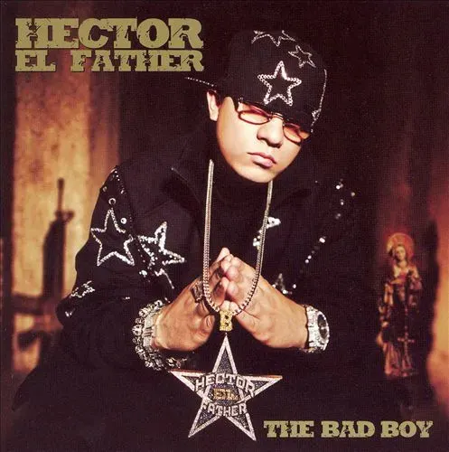

Hector El Father

Género: Reggaeton
Hector El Father, uno de los pioneros del género urbano de la Old School.
Revisa quien suena últimamente en Regi Music.

Género: Reggaeton
Hector El Father, uno de los pioneros del género urbano de la Old School.

Descripción de la canción, su popularidad y a que género pertenece